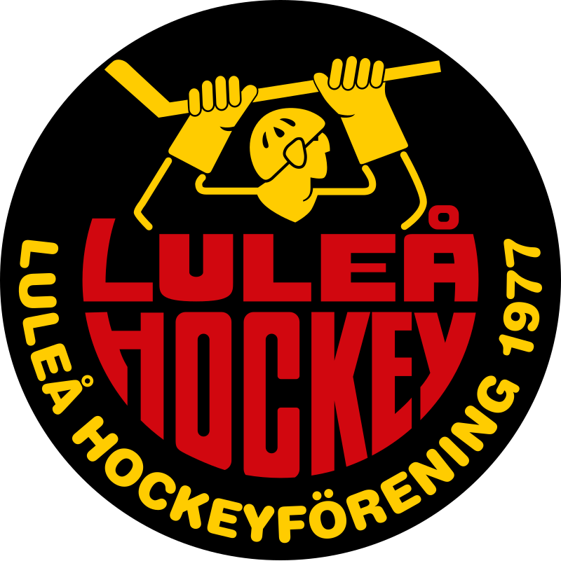
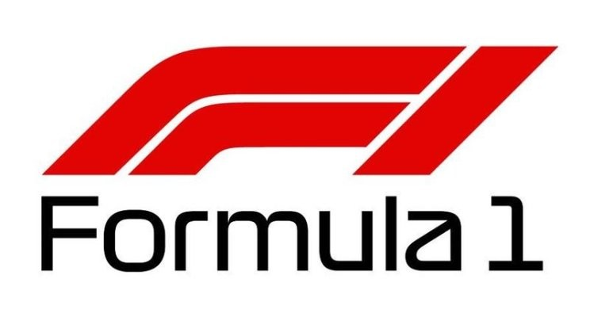
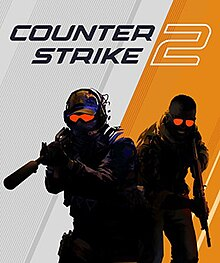
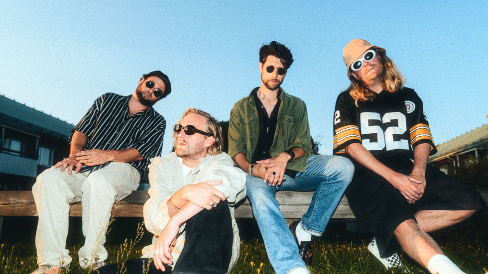
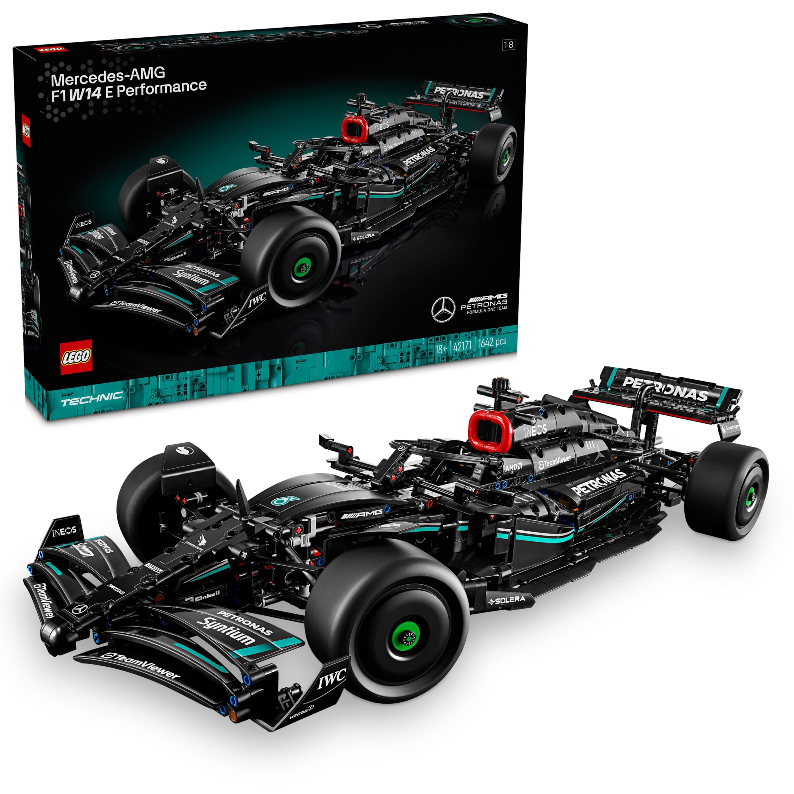

Luleå Hockey
Jag har alltid varit ett hockeyfan, vuxit upp med att kolla på Elitserien som det hette på den tiden och NHL. Varit ett Luleå Hockey supporter sedan barnsben. Haft säsongskort i 10 år detta året. Medlem i Luleå Hockeyföreningen i 5 år. Missar inte många matcher under åren. Än har det inte blivit någon bortaresa med det kommer nog ske så småningom.
Formula 1
Är en person som tycker om lite olika sporter, men lägger inte lika mycket tid på dem som hockey och F1. Kollar varje race helg, missar mest träningarna. Men från P3 (practice 3) och kvalet fram till race dagen så kollar jag.
Gaming
Jag har spelat spel ända sedan man var liten, tid man hade efter skolan och lek ute med vänner gick åt till att spela spel. Hade dock svårt med det när man var liten, vi hade en dator hemma och den hade Linux som operativsystem så det blev inte så mycket spel på den tiden. Det mesta kom när vi fick ett Playstation, sen ett Xbox. Spel som jag lägger mest tid på när det finns över är Counter Strike 2.
Musik
Musik är något som oftast är på hemma. Lagar jag mat så är musiken på, om jag städar, spelar spel. Till och med när jag sitter och pluggar så är musiken på. Musik får mig att kunna konsentrera bättre. Lyssnar på mycket olika genrer, rap, rock, pop, house, techno, trance och mer. Har så klart mina favoriter, lyssnar varje vecka på A State of Trance med Armin van Buuren. Missar aldrig ny släpp från Luleå, Zacke och Movits!
Lego
En annan hobby som jag har är att bygga Lego. Har tidigare inte haft ekonomin för det, så tidigare har det bara blivit de lego som jag har fått i presenter, då har det bara varit små saker, 3in1 som det kallas. Men nu har jag gjort mitt första köp. Och så klart blev det 2023 års Mercedes F1 bilen. Kommer bli fler inköp, Star Wars, Marvel och mer.